iphone 5s
Rodrigo Fernández Guzmán
1º DAW
Desarrollo De Aplicaciones Web
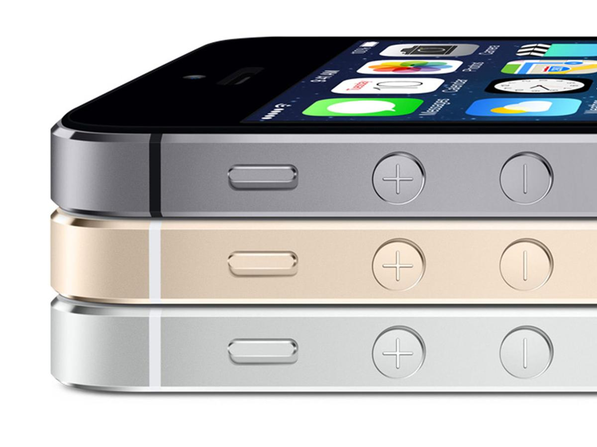
Funcionalidades
Un chip con arquitectura de 64 bits. Un sensor identificador de huellas digitales. Una cámara aún mejor y más rápida, y un sistema operativo creado especialmente para la arquitectura de 64 bits. Cualquiera de estas funcionalidades harían de un smartphone un dispositivo adelantado a su tiempo. Todas juntas hacen del iPhone un smartphone definitivamente adelantado a su tiempo.
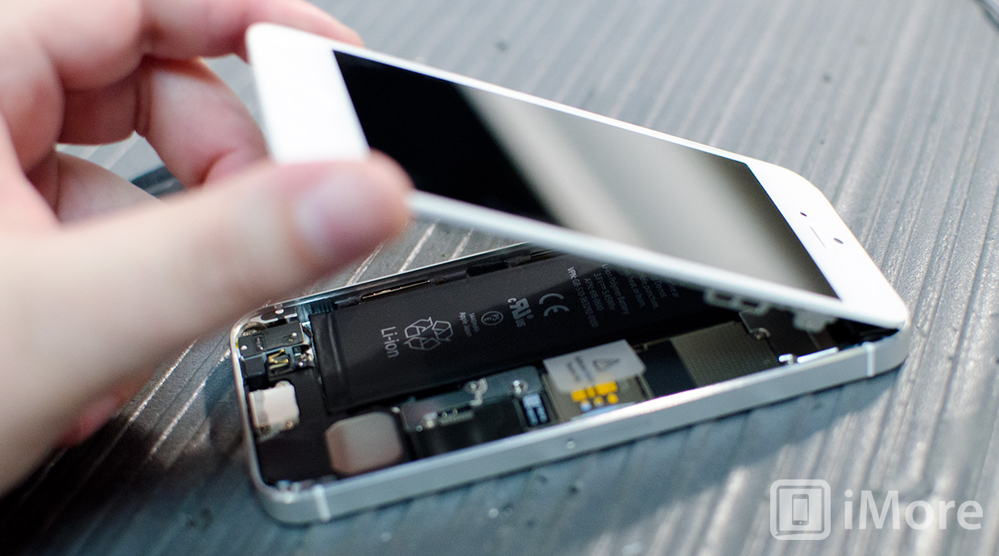
Existe la velocidad, y ahora también existe la velocidad A7. El nuevo chip A7 le brinda a tu CPU y a tus gráficos un desempeño hasta dos veces más rápido que el chip A6. Pero lo más increíble de todo es que convierte al iPhone 5s en el primer smartphone de 64 bits en el mundo; estamos hablando de la arquitectura de una computadora de escritorio, en un teléfono superdelgado.
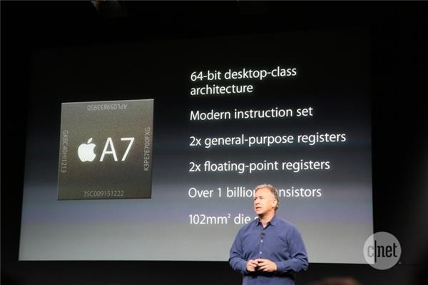
El chip A7 es compatible con la versión 3.0 de OpenGL ES para ofrecerte gráficos súper detallados y efectos visuales tan complejos que hasta ahora sólo eran posibles en las computadoras Mac, PC y consolas de videojuegos. La diferencia es asombrosa: por ejemplo, tomemos los mundos imaginarios de los videojuegos. Las texturas y las sombras se ven más reales, y hasta la luz del sol se refleja sobre el agua. Toda la experiencia se siente más real.
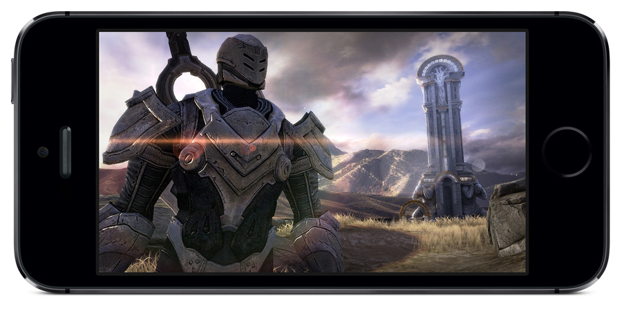
El nuevo coprocesador M7 es el compañero ideal del chip A7. Está diseñado específicamente para medir los datos de movimiento del acelerómetro, el giroscopio y la brújula. Una tarea que normalmente recaería sobre el chip A7, pero que el M7 realiza con mucha más eficiencia.
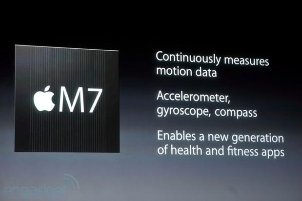
El iPhone 5s cuenta con tecnologías avanzadas especialmente diseñadas para el hardware y el software de la cámara iSight. Así todos podrán tomar una fotografía increíble, en cualquier momento y lugar. Sencillamente tiene más sentido enseñarle al iPhone cómo tomar una gran fotografía que enseñarle a las personas cómo ser expertos fotógrafos. Estas son algunas de las capacidades de la nueva cámara iSight.
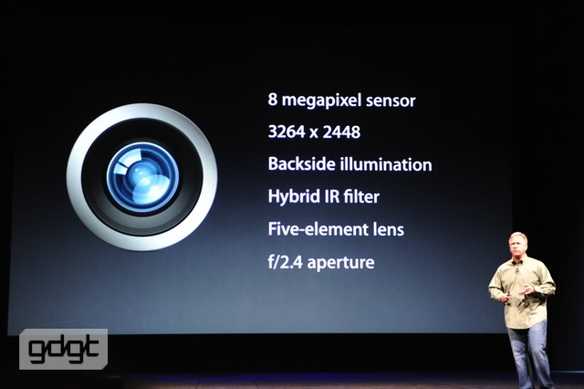
Mayor sensor. Mayores pixeles. Mayor apertura.
La luz es un factor clave para sacar una gran foto. La nueva iSight tiene un sensor un 15 por ciento más grande. Pixeles más grandes que miden 1.5 micrómetros y una apertura de ƒ/2.2, lo cual permite que entre más luz.
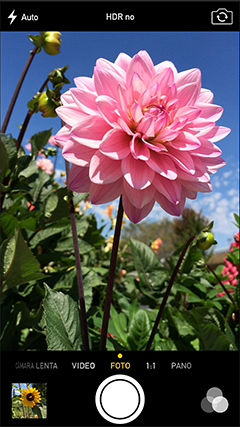
Modo ráfaga continuo
El modo ráfaga te permite capturar múltiples tomas de una acción, al sacar 10 fotos por segundo. Además, un análisis en tiempo real te sugiere tomas individuales o una secuencia de fotos que, tal vez, te gusten más.

Flash True Tone.
Un LED blanco y un LED ámbar trabajan con algoritmos inteligentes de software para ajustar la intensidad del flash y la temperatura del color, usando más de 1000 combinaciones únicas para iluminar tu objetivo en forma perfecta.
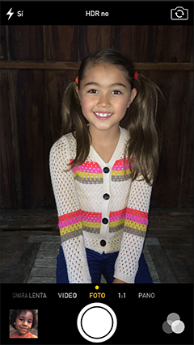
Estabilización automática de imagen.
La estabilización automática de imagen se activa cuando la necesitas para ayudar a reducir el ruido y el movimiento debido a manos temblorosas y objetos en movimiento.

Cámara lenta.
Graba video de 720p a 120 cuadros por segundo, y reproduce cualquier sección a un cuarto de velocidad para crear un efecto dramático. Luego compártelo con tus amigos y recibe las mejores críticas.
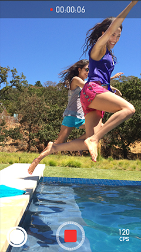
Fotos panorámicas.
Lleva una parte o, mejor dicho, una gran parte de la hermosa línea del horizonte contigo. El modo panorámico te permite captar fotos panorámicas memorables con una exposición automática dinámica que se ajusta a medida que tomas la foto.
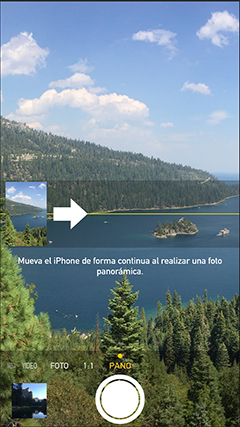
Filtros para fotos.
Aplica filtros a tus fotos convencionales y cuadradas. Elige un filtro y mira el efecto antes de sacar la foto, o agrégalo más tarde. Además, si cambias de parecer y decides que ningún filtro le queda bien a tu foto, simplemente quítalo.
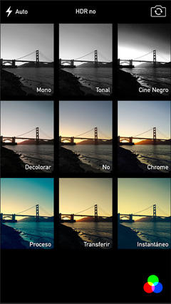
Cuando no puedas estar en persona, al menos podrás estar en la pantalla. Comparte las buenas noticias con tu mejor amigo, o dale las buenas noches a ese viajero que tanto extrañas con una videollamada FaceTime. La nueva cámara FaceTime HD del iPhone 5s cuenta con pixeles más grandes, y un sensor de iluminación posterior que ha sido mejorado para que tu sonrisa ilumine la habitación bajo casi cualquier luz. Además, como ahora en iOS 7 puedes hacer videollamadas FaceTime de audio, tu conversación íntima no tiene que ser cara a cara.
El iPhone 5s es compatible con más redes que nunca, permitiendo que más personas puedan experimentar velocidades rápidas de carga y descarga. Mientras tanto, la cantidad de operadores compatibles con iPhone en todo el mundo sigue creciendo, para que cuando estés viajando puedas aprovechar de las redes ultrarápidas en más lugares.
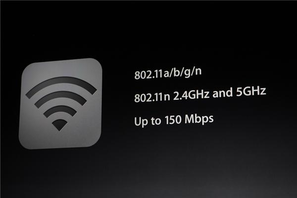
iOS 7 fue diseñado con el iPhone 5s en mente. Por eso, aprovecha al máximo las tecnologías avanzadas del iPhone 5s, como el chip A7 de 64 bits, el sensor identificador de huellas digitales ID táctil, y la nueva y más asombrosa cámara iSight. Además, iOS 7 tiene nuevas funcionalidades como una capacidad multitarea más inteligente, AirDrop y Centro de control, que hace que tus tareas diarias sean más sencillas, veloces y divertidas. No importa lo que estés haciendo o qué app estés usando, encontrar la manera de hacerlo es muy intuitiva. Así que desde el primer día sabrás cómo usar el sistema operativo móvil más avanzado, en el iPhone más avanzado que existe.
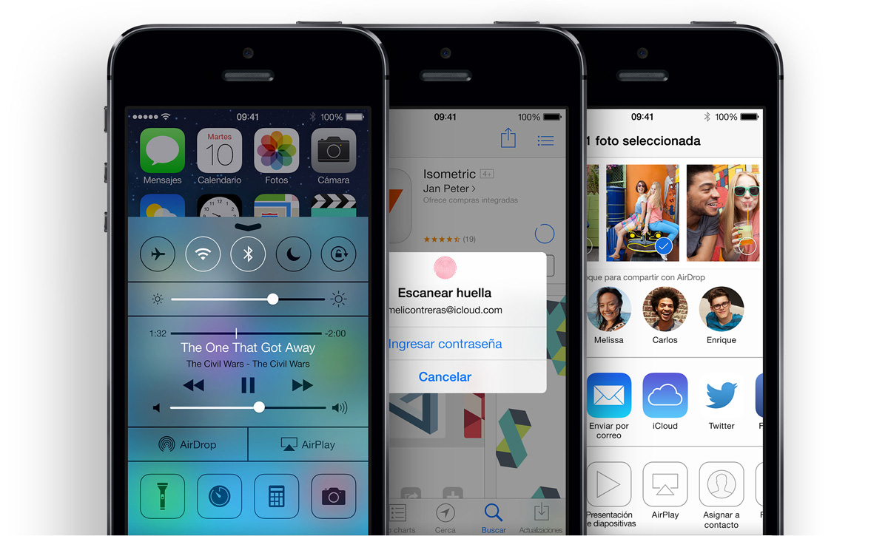
ID tactil Es una forma práctica y altamente segura de acceder a tu teléfono. Tu huella digital también puede aprobar compras de iTunes, el App Store y el iBooks Store, para que no tengas que ingresar tu contraseña. ID táctil es capaz de leer a 360 grados: esto significa que no importa cuál sea la orientación —vertical, horizontal o cualquier punto medio— tu iPhone leerá tus huellas digitales y sabrá quién eres.
iOS 7 viene con una asombrosa colección de apps para las cosas que quieres y necesitas hacer, como enviar emails y mensajes de texto, navegar por la Web, tomar fotos y videos geniales y compartirlos, obtener direcciones, y mucho más. Además, las apps integradas están optimizadas para aprovechar la arquitectura de 64 bits de alto rendimiento del chip A7.
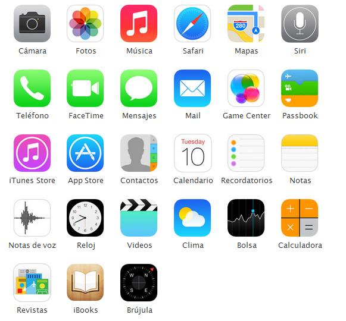
Teléfono
Haz llamadas usando Siri, contesta una con un mensaje de texto, activa la función No molestar, y mucho más.
Calendario
Mira tu agenda del día con sólo un vistazo, incluso las actividades de cinco días completos en vista horizontal.
Fotos
Comparte tus fotos con un grupo de amigos específicos, usando Fotos compartidas de iCloud.
Lee tus emails y administra tu buzón de entrada fácilmente, en la pantalla Retina de 4 pulgadas.
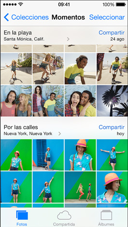
Música
Crea tu biblioteca de iTunes y reprodúcela en cualquier parte de la casa, usando AirPlay. ademas de poder descargala por un bajo costo en la aplicacion Itunes.
Pantalla retina, pantalla wisescreen mmulti-touch de 4 pulgadas (diagonal), resolución de 1136 x 640 pixeles a 326 ppi, relación de contraste 800:1 (normal), brillo máximo de 500 cd/m2 (normal), revestimiento oleofóbico resiste a marcas dactilares al frente,soporte para mostrar varios idiomas y caracteres simultáneamente
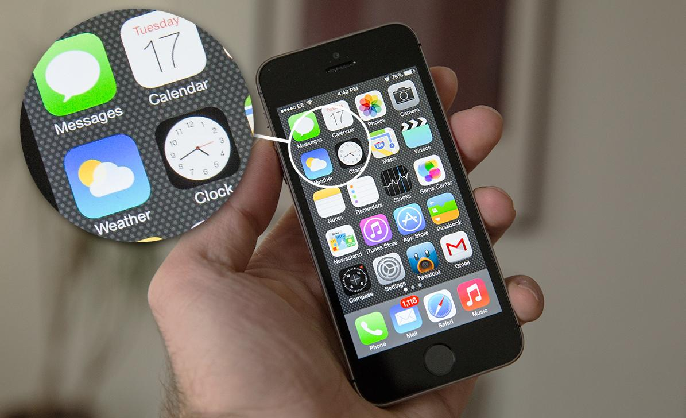